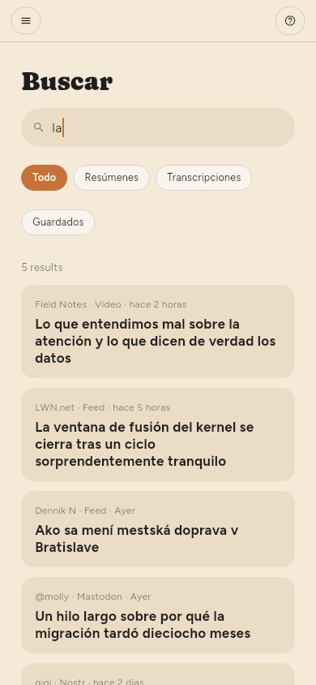

← Resúmenes · Contenido · Guardar cosas →
Encontrar cosas
Buscar en la estantería, o /.
La búsqueda abarca los títulos, el texto de los artículos y las transcripciones de vídeo. Un resultado en una transcripción es un momento: indica la hora y salta a ella cuando lo abres. Un elemento sin título se encuentra por su dirección.

El cuadro de texto del panel de filtros es otra cosa: reduce la lista que tienes delante en lugar de abrir resultados propios. Busca en el título, el nombre de la fuente y el resumen; la búsqueda también lee el texto de los artículos y las transcripciones.

Cada filtro consulta toda la biblioteca, no la parte que hay en pantalla. Una palabra, una etiqueta, Sin leer, Sin resumir, un feed, un tipo: cada uno se responde desde el almacenamiento, así que el número sobre la lista es el número de cosas que hay. tag:linux encuentra todo lo que lleva esa etiqueta, por antiguo que sea; dos etiquetas reducen en lugar de ampliar, y un valor con un espacio va entre comillas: tag:"machine learning".
Etiquetas (solo Premium)
Las etiquetas de un artículo son los temas que destacó su resumen, y puedes cambiarlas: los chips bajo el título en el lector añaden y quitan, y hacer clic en uno muestra todo lo que lo lleva.
También se puede etiquetar una fuente, en su panel; y un artículo se filtra por las etiquetas de su fuente además de las suyas, así que etiquetar un feed organiza los cien artículos que ya contiene y no solo los que lleguen después.
Cada etiqueta en uso aparece en Etiquetas en la estantería, con lo que contiene. Hacer clic en una reduce la lista, y se queda así hasta que haces clic en otra o la quitas con la × de su chip encima de la lista.